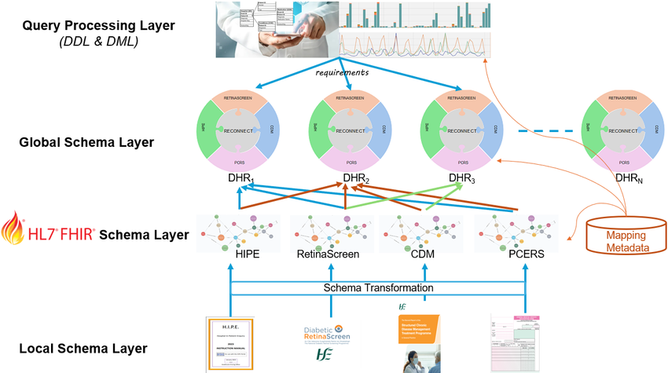
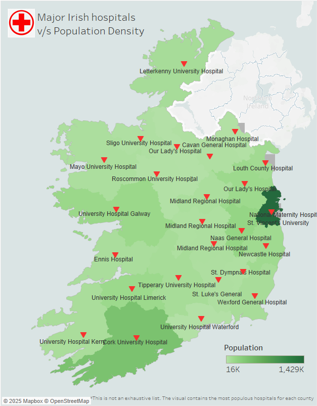

Research Data Engineer
We built a digital system that can collect and combine data from different parts of the healthcare system. The systems include data from sources like Hospital Inpatient Enquiry (HIPE), the Chronic Disease Management (CDM) system, Primary Care Eligibility and Reimbursement Scheme (PCeRS), and Diabetic RetinaScreen. Our goal is to show how this can be done in a smarter, more efficient way.
My role in the project:
- Built automated pipelines and SQL workflows for large-scale healthcare data, streamlining reporting and reducing data preparation time by 30%.
- Collaborated with healthcare researchers and engineers to define requirements and deliver datasets supporting clinical analytics.
- Developed Tableau dashboards for senior stakeholders, improving clarity around operational metrics and accelerating research decisions.
- Integrated structured and semi-structured datasets into unified formats, supporting national public health monitoring and reporting needs.
- Co-authored grant proposals and secured €2.5M in funding to support innovation in healthcare data infrastructure.
Associated publications:
Get In Touch!

